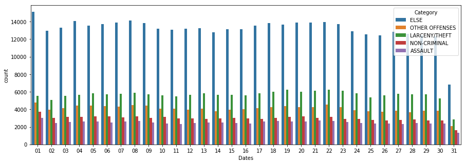
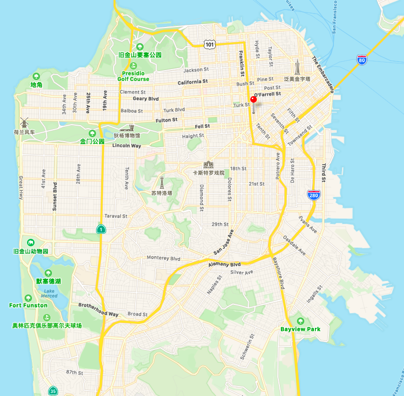
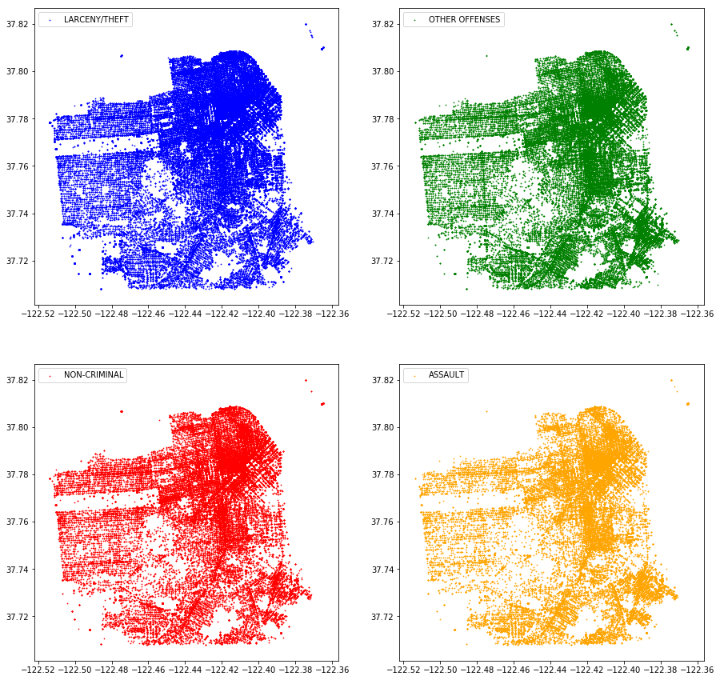

该数据集是旧金山犯罪记录集合，通过训练train集合中的所有数据，从而预测test集合中每类犯罪的概率。
数据分析与清洗
- 读取数据
读取数据，并对train_data进行观察。
1 | import pandas as pd |
图中Category指的是案件类别，一共有纵火、斗殴、空头支票、贿赂、盗窃、扰乱治安的行为、酒驾等39种罪名，最终的目标是预测每一种犯罪的可能性，因此训练的label是一个39长向量。
将每种类型的犯罪进行统计，则有
为了便于后续的分析，我们将案件按照数量进行统计分为5类：
1 | New_Category=train_data.Category.map(lambda x:'ELSE' if ((x!='LARCENY/THEFT')and(x!='OTHER OFFENSES')and(x!='NON-CRIMINAL')and(x!='ASSAULT')) else x ) |
并且每一类的数量统计为：
1 | LARCENY/THEFT 174900 |
打印数据信息
1
2train_data.info()
test_data.info()1
2
3
4
5
6
7
8
9
10
11
12
13
14
15
16
17
18
19
20
21
22
23
24
25
26<class 'pandas.core.frame.DataFrame'>
RangeIndex: 878049 entries, 0 to 878048
Data columns (total 9 columns):
Dates 878049 non-null object
Category 878049 non-null object
Descript 878049 non-null object ##
DayOfWeek 878049 non-null object
PdDistrict 878049 non-null object
Resolution 878049 non-null object ##
Address 878049 non-null object
X 878049 non-null float64
Y 878049 non-null float64
dtypes: float64(2), object(7)
memory usage: 60.3+ MB
<class 'pandas.core.frame.DataFrame'>
RangeIndex: 884262 entries, 0 to 884261
Data columns (total 7 columns):
Id 884262 non-null int64
Dates 884262 non-null object
DayOfWeek 884262 non-null object
PdDistrict 884262 non-null object
Address 884262 non-null object
X 884262 non-null float64
Y 884262 non-null float64
dtypes: float64(2), int64(1), object(4)
memory usage: 47.2+ MB发现数据中没有缺失值，但是发现train_data中有一些属性在test_data中并不存在，因此在训练的时候并不需要这些特征，因此将其删掉
1
train_data.drop(['Descript','Resolution'],axis=1).head(10)
特征分析
好了，接下来我们对每个特征进行分析：
Dates
该特征格式为’yyyy-M-d H:mm:ss’这里需要将其分割，按照不同的时间维度去进行分析。由Dates格式固定，因此我们就用其所在的位置去划分：
1
2
3
4Year=train_data.Dates.map(lambda x:x[0:4])
Month=train_data.Dates.map(lambda x:x[5:7])
Date=train_data.Dates.map(lambda x:x[8:10])
Hour=train_data.Dates.map(lambda x:x[11:13])并将每个维度进行划分：
按照年份：
1
2import matplotlib.pyplot as plt
Year.value_counts().sort_index().plot(kind='bar', title='listed crime by year')从案件总数来说，03~14年案件数量由高到低再到高，再看看几个主要案件类型的变化，
1
2
3import seaborn as sns
plt.figure(figsize=(10,5))
sns.countplot(x=Year,hue=New_Category)几个主要案件类型也在发生变化，例如偷窃案(绿色)的案件在12~14年增多。
按照月份
1
Month.value_counts().sort_index().plot(kind='bar', title='listed crime by month')
每年几个月案件数量都会有起伏，大概每半年有一个起伏周期。下图中，几个主要案件类型分布变化不明显
1
2plt.figure(figsize=(15,5))
sns.countplot(x=Month,hue=New_Category)按照日期
1
Month.value_counts().sort_index().plot(kind='bar', title='listed crime by month')
案件总数会随每月几号进行起伏，其中1号最多，31号最少（因为有的月份并没有31号）,下图中，几个主要案件类型分布变化不明显
1
2plt.figure(figsize=(15,5))
sns.countplot(x=Month,hue=New_Category)
按照时间
1
Hour.value_counts().sort_index().plot(kind='bar', title='listed crime by hour')

案件总量会随着时间的变化而变化，其中凌晨发生案件的数量较少，白天后急剧增加，在12点和19点到达最高（都是饭点）.
下图总，几个主要案件类型分布发生了明显的变化，尤其是绿色和黄色的条，可见一天中的时间点对于不同类型案件也产生了很大的影响。
好了，对于Dates特征的分析到此为止，可以看到案件总会随着不同的Dates变化而变化，其具体案件类型的分布也会随之变化。
DayofWeek
一周中不同的时间对于案件的影响
1
train_data["DayOfWeek"].value_counts().plot(kind='bar', title='listed crime by DayofWeek')
图中可以看出，案件随着不同的WeekofDay而变化，其中具体的类型也会受到其影响，如图所示
1
2plt.figure(figsize=(15,5))
sns.countplot(x=train_data["DayOfWeek"], hue=New_Category)PdDistrict
警局部门，需进行观察一下
1
train_data["PdDistrict"].value_counts().plot(kind='bar', title='listed crime by PdDistrict')
可以看到从总量来说，不同警局对于案件的受理有着明显的不同，具体到案件类型上来说，如下图所示有着明显的不同，例如Northern,Southern,Central三个警局对于LARCENY/THEFT比重较大，Ingleside和Bayview对于Assault案件比重较大，该属性中的各个类别不同的案件种类明显有不同的差距，该特征较强。
Address
对地址信息进行统计，并画图观察
1
Address_train=train_data["Address"].value_counts()
1
2
3
4
5
6
7
8
9
10
11
12
13
14
15
16
17
18
19
20
21
22
23
24800 Block of BRYANT ST 26533
800 Block of MARKET ST 6581
2000 Block of MISSION ST 5097
1000 Block of POTRERO AV 4063
900 Block of MARKET ST 3251
0 Block of TURK ST 3228
0 Block of 6TH ST 2884
300 Block of ELLIS ST 2703
400 Block of ELLIS ST 2590
16TH ST / MISSION ST 2504
1000 Block of MARKET ST 2489
1100 Block of MARKET ST 2319
...
1400 Block of 4TH ST 1
CABRILLO ST / 40TH AV 1
5TH ST / CYRIL MAGNIN STORTH ST 1
BRADFORD ST / TOMPKINS AV 1
1700 Block of PACHECO ST 1
DONNER AV / BAY SHORE BL 1
SATURN ST / LOWER TR 1
OFARRELL ST / ANZA ST 1
GEARY BL / JORDAN AV 1
0 Block of SAN FELIPE AV 1
Name: Address, Length: 23228, dtype: int64发现种类繁多，并且太过于具体，这里我们可以将地址分为案件高发地区，普通地区，低发地区等等。
1
2
3Address_test=test_data["Address"].value_counts()
ret_list = [item for item in list(Address_test.axes[0]) if item not in list(Address_train.axes[0])]
len(ret_list)1
1549
但是在test_data中存在1549条不存在于train_data中，因此我们可以将Address属性进行删除。
X、Y
这里的x和y是坐标的显示，我们可以先通过散点图进行画图，观察发现有异常值
1
2
3data_x=train_data['X'].values
data_y=train_data['Y'].values
plt.scatter(data_x,data_y)
因此需要去除异常值来观察
1
2
3
4
5plt.figure(figsize=(10,10))
data_x=train_data['X'].values
data_y=train_data['Y'].values
plt.scatter(data_x,data_y)
plt.scatter([x for x in data_x if x <-122],[y for y in data_y if y <70],s=0.5)
可以看到在人口较多的地方犯罪数量很多，具体到每种犯罪类型上
1
2
3
4
5
6
7
8
9
10
11
12
13train_data['New_Category']=New_Category
New_Category_count=train_data['New_Category'].value_counts()
label=list(New_Category_count.axes[0])
count=1
colors = ['b','g','r','orange']
plt.figure(figsize=(15,15))
for item in label[1:]:
plt.subplot(2,2,count)
train_data_x=train_data[train_data['New_Category']==item]['X']
train_data_y=train_data[train_data['New_Category']==item]['Y']
plt.scatter([x for x in train_data_x if x <-122],[y for y in train_data_y if y <70],label=item,s=0.5,c=colors[count-1])
plt.legend()
count+=1
发现不同类型的犯罪分布有较小的差异，此外，我们应该对train_data的异常值进行处理，这里我们发现Address属性与X、Y存在一定的关系，我们可以通过地址的字符串去模糊的反推出异常的X、Y坐标。首先将数据分成两部分，一部分是有异常值，另一部是没有异常值，用没有异常值中的坐标去替换异常坐标值。
1
2
3
4
5
6
7
8
9
10
11
12
13
14
15
16
17
18
19
20
21
22
23
24
25
26
27
28
29
30train_data_error=train_data[train_data['Y']>70]
train_data_right=train_data[train_data['Y']<70] #数据分开
for item1 in train_data_error['Address']:
new_x=np.mean(train_data_right['X'].values)
new_y=np.mean(train_data_right['Y'].values)
temp1=item1.split('/')
temp1[0]=temp1[0].strip()
for item2 in train_data_right['Address']:
temp2=item2.split('/')
temp2[0]=temp2[0].strip()
if len(temp1)==2 and len(temp2)==2:
if ( (temp1[0]==temp2[0]) or (temp1[1]==temp2[0]) or (temp1[0]==temp2[1]) or (temp1[1]==temp2[1]) ):
new_x=train_data_right[train_data_right['Address']==item2]['X'].values[0]
new_y=train_data_right[train_data_right['Address']==item2]['Y'].values[0]
break
if len(temp1)==2 and len(temp2)==1:
if ( (temp1[0]==temp2[0]) or (temp1[1]==temp2[0]) ):
new_x=train_data_right[train_data_right['Address']==item2]['X'].values[0]
new_y=train_data_right[train_data_right['Address']==item2]['Y'].values[0]
break
if len(temp1)==1 and len(temp2)==2:
if ( (temp1[0]==temp2[0]) or (temp1[0]==temp2[1]) ):
new_x=train_data_right[train_data_right['Address']==item2]['X'].values[0]
new_y=train_data_right[train_data_right['Address']==item2]['Y'].values[0]
break
count+=1
train_data_error.loc[train_data_error['Address']==item1,'X']=new_x
train_data_error.loc[train_data_error['Address']==item1,'Y']=new_y
train_data=pd.concat([train_data_right,train_data_error]) #数据合并
train_data.sort_index()然后再将数据画图，发现并无异常值
同理，对于test_data集合也做该操作，修改过后X、Y属性并无异常值。
1
2
3
4
5
6
7
8
9
10
11
12
13
14
15
16
17
18
19
20
21
22
23
24
25
26
27
28
29
30test_data_error=test_data[test_data['Y']>70]
test_data_right=test_data[test_data['Y']<70] #数据分开
for item1 in test_data_error['Address']:
new_x=np.mean(test_data_right['X'].values)
new_y=np.mean(test_data_right['Y'].values)
temp1=item1.split('/')
temp1[0]=temp1[0].strip()
for item2 in test_data_right['Address']:
temp2=item2.split('/')
temp2[0]=temp2[0].strip()
if len(temp1)==2 and len(temp2)==2:
if ( (temp1[0]==temp2[0]) or (temp1[1]==temp2[0]) or (temp1[0]==temp2[1]) or (temp1[1]==temp2[1]) ):
new_x=test_data_right[test_data_right['Address']==item2]['X'].values[0]
new_y=test_data_right[test_data_right['Address']==item2]['Y'].values[0]
break
if len(temp1)==2 and len(temp2)==1:
if ( (temp1[0]==temp2[0]) or (temp1[1]==temp2[0]) ):
new_x=test_data_right[test_data_right['Address']==item2]['X'].values[0]
new_y=test_data_right[test_data_right['Address']==item2]['Y'].values[0]
break
if len(temp1)==1 and len(temp2)==2:
if ( (temp1[0]==temp2[0]) or (temp1[0]==temp2[1]) ):
new_x=test_data_right[test_data_right['Address']==item2]['X'].values[0]
new_y=test_data_right[test_data_right['Address']==item2]['Y'].values[0]
break
count+=1
test_data_error.loc[test_data_error['Address']==item1,'X']=new_x
test_data_error.loc[test_data_error['Address']==item1,'Y']=new_y
test_data=pd.concat([test_data_right,test_data_error]) #数据合并
test_data.sort_index()接下来对train_data和test_data的X、Y进行归一化操作。
1
2
3
4
5
6max_x=np.max(train_data.X)
min_x=np.min(train_data.X)
train_data['X']=train_data.X.map(lambda x:(x - min_x) /(max_x-min_x))
max_y=np.max(train_data.Y)
min_y=np.min(train_data.Y)
train_data['Y']=train_data.Y.map(lambda y:(y - min_y) /(max_y-min_y))1
2
3
4
5
6max_x=np.max(test_data.X)
min_x=np.min(test_data.X)
train_data['X']=test_data.X.map(lambda x:(x - min_x) /(max_x-min_x))
max_y=np.max(test_data.Y)
min_y=np.min(test_data.Y)
test_data['Y']=test_data.Y.map(lambda y:(y - min_y) /(max_y-min_y))feature的添加和修改与one-hot
添加一些时间分割后的列，去除多余的列
1
2
3
4
5
6train_data['Year']=Year
train_data['Month']=Month
train_data['Date']=Date
train_data['Hour']=Hour
train_data=train_data.drop(['Dates','Address','New_Category','Resolution','Descript'],axis=1)
train_data.head()1
2
3
4
5
6
7
8
9
10Year_test=test_data.Dates.map(lambda x:x[0:4])
Month_test=test_data.Dates.map(lambda x:x[5:7])
Date_test=test_data.Dates.map(lambda x:x[8:10])
Hour_test=test_data.Dates.map(lambda x:x[11:13])
test_data['Year']=Year_test
test_data['Month']=Month_test
test_data['Date']=Date_test
test_data['Hour']=Hour_test
test_data=test_data.drop(['Id','Dates','Address'],axis=1)
test_data.head()进行one-hot编码
1
2
3train_label=tpd.get_dummies(train_data.Category)
train_feature=pd.get_dummies(train_data.drop('Category',axis=1))
test_feature=pd.get_dummies(test_data)
模型构建与参数调整
通过决策树回归模型简答的调整了参数，代码如下
1 | from sklearn.tree import DecisionTreeRegressor |
1 | {'max_depth': 10, 'max_features': 50} 0.014445116219467402 |